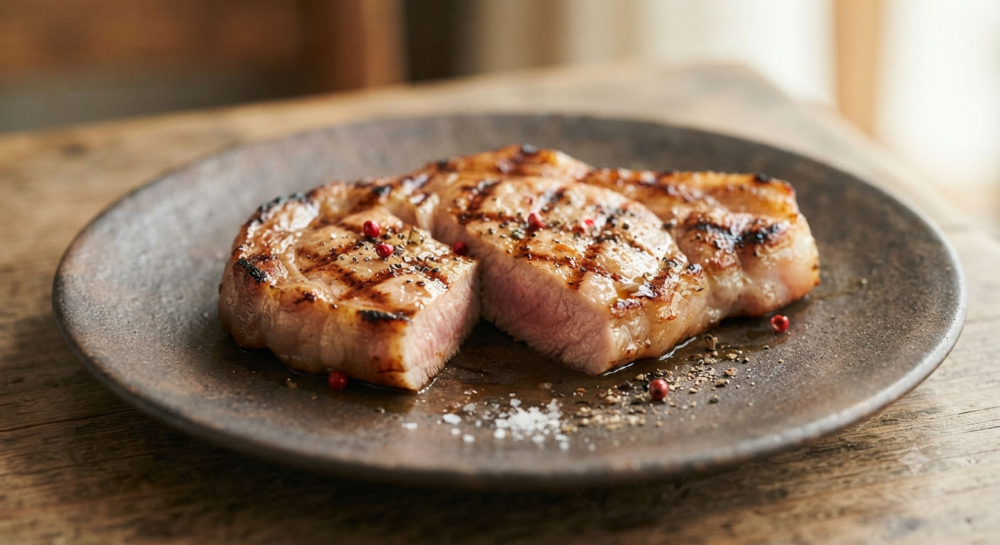

Michelin Bib Gourmand 2017 Listed
Scroll
名門・辻調理師専門学校出身のシェフ高橋が手がけるのは、
北海道の豊かな大地と海の恵みを、フランス伝統技法で昇華させた一皿。
カウンター越しの会話と、奥様が注ぐ厳選されたワイン。
そこには、日常を彩る最高のご褒美があります。

当店が自信を持ってお届けする、赤身の旨みが際立つ短角牛。
適切な熟成期間を経て、絶妙な火入れで閉じ込めた肉汁は、
噛みしめるほどに力強い香りが広がります。
Course Menu
「一品目から、『あ、このお店美味しい』ってわかる。久々に見つけたドストライクなお店です絶対にリピします。」
— 2024年上半期 TOP3のご利用
「気さくな奥様がコースやワインの説明をしてくれるし、コスパ良く良いお肉を使用しているのにリーズナブル。」
— 家族・ご夫婦でのご利用
「お店の味を自宅や大切な人へ届けたい」という声にお応えし、シェフ特製のパテ・ド・カンパーニュや熟成肉のコンフィ、ソムリエ厳選ワインをお取り寄せできるサービスを準備中です。
本格的なディナーの前のひとときに。週末の夕方、サクッと上質な自然派ワインと小皿の旬フレンチをノーチャージで気軽に立ち寄り楽しめる「アペロ（夕暮れワイン）」時間をスタート予定です。
住所
〒060-0063 札幌市中央区南3条西7丁目7
M'sビルヂング 2F
最寄り駅
地下鉄「大通駅」徒歩7分
市電「西8丁目駅」徒歩3分
営業時間・定休日
17:30〜23:00（コース・アラカルト）
定休日：月曜日
※ビル2階の少し奥まった場所にございます。隠れ家のような空間をお楽しみください。